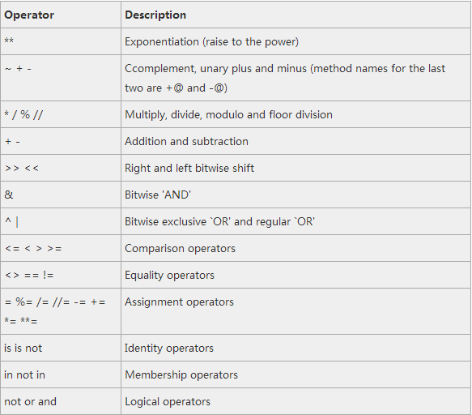
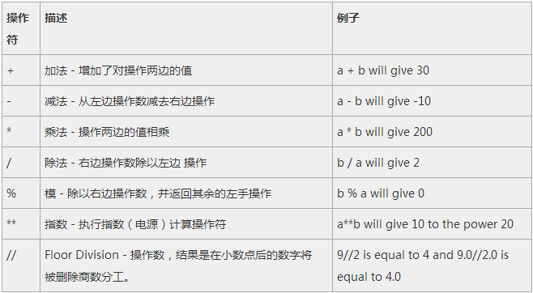
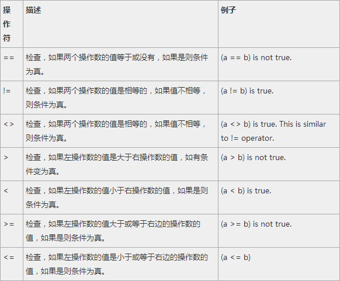
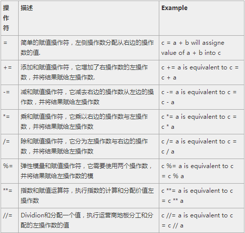
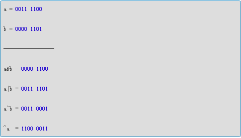
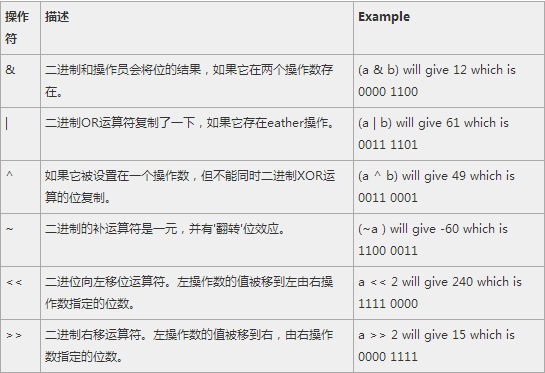
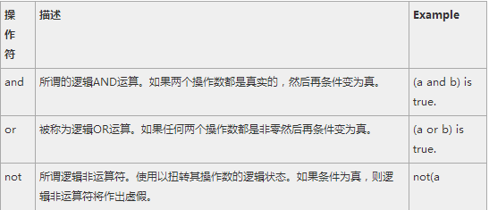
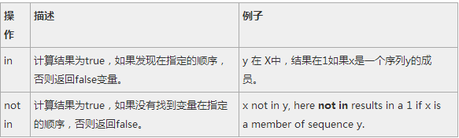
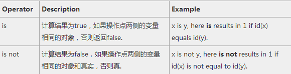

编码
编码的种类
| 名称 | 说明 |
|---|---|
| ascii | 不能改变,最早的编码,8bit,1byte |
| GBK | 里面的内容占16bit,2byte |
| unicde | 万国码,占32bit,4byte,优点:包含了所有的编码类型,缺点:浪费数据传输和数据存储 |
| utf-8 | 长度可变:英文:8bit 1byte中文:24bit 3byte |
字符与字节之间的转换
- encode(编码名):把文字变成byte类型的 默认是utf-8格式的
- decode(编码):把字节类型转换成文字
小数据池==编辑器的情况是这样的,pychram就会不一样==
- int类型：两个变量的值如果先拿相同，值在－５－＞２５６之间的内存地址是一样的
- str：如果值是一样的那就是同一个内存地址
- is：判断的是内存地址
- id（变量）：返回变量的内存地址
运算符的优先级
运算符优先级 从高到低:

算数运算符

比较运算符

赋值运算符

位运算


逻辑运算符

成员操作符

身份运算符
